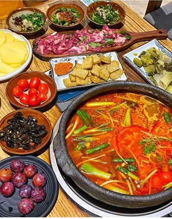
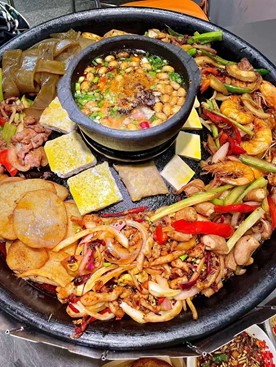
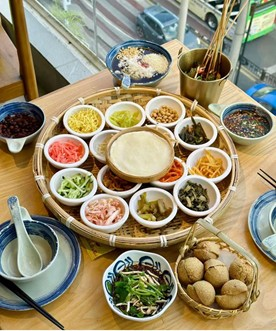

贵州酸汤
🔴简介：贵州酸汤是黔菜中的一大特色，以其独特的酸鲜、香辣、味厚而闻名。酸汤分为红酸汤和白酸汤。红酸汤以新鲜红辣椒和野生番茄（毛辣果）为主要原料，经过破碎后加入生姜、白酒、甜酒等辅助原料，装坛发酵而成。其特点是色鲜红、香清香、味醇酸、回甜。白酸汤主要用淘米水或用米汤酿造而成，汤色乳白，气味芳香，有回甜感。
起源：相传在古代，贵州地区盐务被管制，买盐困难，苗民们便发明了以酸代盐的方法，从而形成了独特的酸汤文化。酸汤的制作和食用在苗族等少数民族中尤为普遍，成为他们饮食中不可或缺的一部分。更有俗语说道：“三天不吃酸，走路打窜窜。”
🔴发展：酸汤在贵州的美食应用极为广泛，无论是酸汤鱼、酸汤牛肉等主菜，还是酸汤粉、酸汤捞饭等小吃，酸汤都是不可或缺的调味料。酸汤的独特风味使其成为贵州美食的代表之一，吸引了无数食客的青睐。近年来，贵州酸汤产业得到了快速发展，成为地方特色经济的重要支柱。黔东南州科技局通过科技创新和平台建设，推动了“凯里酸汤”从传统手工制作向现代化、规模化生产的转变。同时，贵州酸汤产品也逐步走向全国乃至国际市场，成为推广贵州美食文化的重要载体酸汤的美食应用。

贵州烙锅
🔴简介：
烙锅是贵州的一种地方名小吃，水城烙锅始于清朝，有300多年历史。烙锅与一般烤肉相似，但有其特点。
🔴烙锅始于清朝,有300多年历史，传说,平西王吴三桂调兵镇压水西（今水城县）彝族，到达水西后粮草不足，官兵们只好取来屋顶瓦片和腌窖食物的瓷器土坛片架在火上，把猎获的野味和采摘的野菜放到上面烙熟后充饥，正是当年的这一无奈之举，创出了这道美味。大概到了清末，起初使用的不带边的凹状瓦片或瓷器土坛片，逐渐改制成了中间凸状的黑砂烙锅，这种带沿的中间高边沿低的烙锅，可以让多余的油脂自动流向锅边，且随时都可以将它往原料上面浇。这时期，烙食的原料在野味野菜的基础上，增加了当地特产的豆腐和臭豆腐，并且在吃的时候要蘸五香辣椒面味碟。改革开放后，烙锅以地摊的形式出现在了水城街头。后来，人们又将凸状黑砂锅改成了平底的带边生铁锅，并且是放到煤气炉上面加热。1992年后，水城烙锅破天荒地搬进了店堂，并很快形成了烙锅食街。这时已经是无所不烙了——海鲜禽畜、鸡鸭牛羊、家野蔬菜等各种荤素原料，均被放到了锅中，蘸碟也比原来单一的五香辣椒面蘸碟增加了许多，像麻辣折耳根蘸水、烧青椒蘸水、五香辣椒面等。

贵州丝娃娃
🔴简介：
丝娃娃，别名素春卷，是贵州省贵阳市的一种常见的地方传统小吃，只要在贵阳各地每一条街上，几乎都能看得见。丝娃娃是将各种素菜裹于极薄面皮中食用的一种特色小吃，因其猛一看颇似产房里初生的婴儿被裹在“襁褓”中，得名于“丝娃娃”。
🔴口感介绍：丝娃娃的“襁褓”是用大米面粉烙成的薄饼，薄薄如纸却有—只手掌那么大。再卷入萝卜丝、折耳根（鱼香菜）、海带丝、炸黄豆、脆哨、糊辣椒等。当地人吃时，少不了注入酸酸辣辣的汁液。这料水就是丝娃娃的精髓。丝娃娃的菜丝切得极细，红、白、黄、黑等各种色彩相间，十分漂亮。再辅以特质蘸水，当真是酸辣爽口，开胃健脾。
